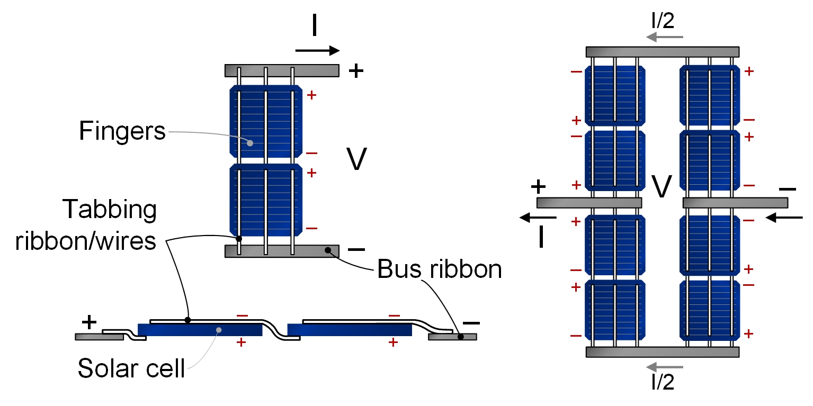

Table of contents
Key takeaways Quick decision guide The concept that makes it click When series is usually better When parallel is usually better How this interacts with MPPT vs PWM Common mistakes FAQ
Key takeaways
- Series increases array voltage; parallel increases array current.
- Series often helps with longer wire runs; parallel can be more forgiving in partial shading situations.
- Your charge controller’s voltage/current limits are the hard boundaries—design inside them.
How to size a solar system (start here)
Quick decision guide (choose this if…)
- Choose series if you have longer cable runs, you’re using an MPPT controller, and shading is minimal/consistent.
- Choose parallel if partial shading is common (trees, vents), or you need to keep voltage low due to controller limits.
- Choose series-parallel (a mix) when you need both: higher voltage than pure parallel, but not as shade-sensitive as a long series string.
The reader is the hero: your job is simply to pick the wiring that prevents the two failures people hate—wasted solar production and wiring that runs too hot.
The one concept that makes it click: voltage up vs current up
Wiring in series adds voltage (like stacking batteries end-to-end). Wiring in parallel adds current capacity (like widening the pipe).
Why it matters: higher current usually drives thicker wire and higher-rated protection devices.

{kind=link}
When series is usually better (and the main tradeoff)
Longer wire runs (voltage drop advantage)
Higher array voltage often means lower current for the same power, which reduces voltage drop and can simplify wiring—especially when panels are far from the controller.
Solar wire size (amps + distance)
MPPT controllers and higher array voltage
MPPT controllers are often more flexible with higher input voltages (within limits) and can convert that voltage efficiently into battery charging current. This is a common reason people choose series strings.
The tradeoff: shading and mismatch can hurt more
In a series string, one weaker panel can pull down the string’s output. Good design tries to keep panels in a string seeing similar conditions.
When parallel is usually better (and the main tradeoff)
Partial shading and uneven conditions
If you expect frequent partial shading (roof vents, trees, seasonal shadows), parallel wiring can reduce how much one shaded panel affects the rest of the array.
The tradeoff: more current (often thicker wire + bigger protection)
Parallel wiring typically means higher array current, which can push you toward thicker cable, larger breakers/fuses, or a combiner solution.
Solar fuses vs breakers Combiner boxes and disconnects Wiring & protection cost
How this interacts with MPPT vs PWM (plain language)
Controller choice can change what “good wiring” means. MPPT often gives you more flexibility to run a higher-voltage array (again: within limits). PWM tends to push people toward keeping array voltage closely matched to the battery bank.
MPPT vs PWM: controller comparison Charge controllers and batteries (component roles)
Common mistakes (and what they look like)
- Exceeding controller limits: can cause shutdowns or damage; always design within voltage/current ratings.
- Assuming “more panels” fixes shading: shading is a layout problem first, a panel-count problem second.
- Ignoring wire run length: parallel can punish long distances with higher current and voltage drop.
- Mixing mismatched panels: different specs in the same string often reduce real output.
Low solar output troubleshooting
FAQ
Is series or parallel “better”?
Neither is universally better. Series often helps with long runs and MPPT setups; parallel can be more forgiving with partial shading.
Does series increase watts?
It increases voltage, not “free power.” Total power depends on sunlight and panel output. Wiring changes how that power is delivered.
What happens if one panel is shaded?
Shading can reduce output more in series strings. Design tries to group panels with similar sun exposure in the same string.
Can I mix series and parallel?
Yes, many arrays are built as series strings connected in parallel. The safe approach is to keep strings consistent and stay within controller limits.
Do I need MPPT for series wiring?
Not always, but MPPT often makes higher-voltage array configurations more practical and efficient (within equipment limits).
Next logical reads
MPPT vs PWM Solar wire size Solar fuses vs breakers Solar panel output calculator How to choose system voltage